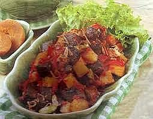

Sambal Goreng Hati Kentang

Bahan-bahan :
- 250 gr hati sapi atau hati ayam, potong dadu
- 250 gr kentang potong dadu, goreng
- 50 gr kapri
- 5 bh cabe merah besar, haluskan
- 2 bh bawang putih, haluskan
- 8 bh bawang merah, iris tipis
- 2 bh cabe merah besar, buang biji, iris halus
- 1 ruas lengkuas, memarkan
- 2 lbr daun salam
- 1 btg serai
- 1 sdt garam
- 200 ml santan
Cara Membuat :
- .Tumis bawang merah hingga layu, masukkan cabe halus dan bawang putih halus, tumis terus hingga wangi. Masukkan daun salam, serai dan lengkuas. Aduk rata.
- Masukkan hati sapi/ayam, aduk dan masak terus hingga hati berubah warna dan matang. Tuang santan, biarkan mendidih.
- Masukkan kentang dan cabe iris, aduk rata, taburkan kapri. Aduk kembali kemudian angkat.